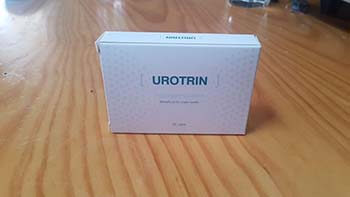

Beindult egy program a férfiak vizeletürítési zavaraival való harchoz. Tudjon meg többet egy urológus szakemberrel készített interjúból
Gyakorlatban a vizeletürítési zavarok ilyen vagy olyan szinten előfordulnak szinte minden második 40 feletti férfinál. De kevesen jutnak el a szakemberhez ezzel a problémával. A legtöbben nem is képzelik, milyen veszély fenyegeti őket.
Elismert tény, hogy az európai tudósok által létrehozott modern fejlesztés megmentheti férfiakat a szörnyű problémától.
Másfél hónappal ezelőtt egy program indult a vizeletürítési rendellenességek leküzdésére, a neve a "Férfi egészség". A program keretében bárki a legalacsonyabb áron elérheti a javulást!
Megkértük az egyik vezető urológus és andrológus szakembert, a Férfi egészség magánközpontjának az urológiai osztályának vezetőjét, Boris Ružićt, hogy meséljen bővebben erről a programról.
Boris Ružić, 20 éves tapasztalattal bíró urológus szakember: "Az igazat megvallva, nagyon aggódom azokért a férfiakért, akik nem kellőképpen törődnek az egészségükkel."
Időben történő terápia nélkül a gyakori vagy nehéz éjszakai vizelési problémák vesegyulladáshoz és kövek képződéséhez vezethetnek, valamint prosztata adenomához és rákhoz. Ha valaki nem tudná, ezek a betegségek rendkívül veszélyesek és végső stádiumban leggyakrabban sebészeti úton megoldhatók (és nem mindig sikeresen).
Sőt, e súlyos következmények kialakulása nagyon kevés időt vehet igénybe - akár pár hónapot
A PROSZTATARÁK STÁDIUMA
- Húgycső
- Nyirokcsomó
- Húgyhólyag
- Here
- Ondóhólyag
- A főemlős mirigy (prosztata)
- Végbél
- Húgycső
- Boris Ružić, mondja el, hogyan sikerült kiutat találnia ebből a helyzetből.
- Leggyakrabban a vizeleteresztési problémák, valamint az éjszakai vizelési inger, a prosztata betegség közvetlen következményei. Valószínűleg ez a krónikus prosztatagyulladás következménye.
új generációs európai készítmény a prosztatagyulladás ellen. Segít kiküszöbölni a vizeletinkontinencia okait, valamint a vizelés gyakoriságával kapcsolatos problémákat, minimalizálva a veszélyes szövődmények kockázatát.
- Miért hívta fel az az orvostársadalom figyelmét magára, különösen ilyen magas körökben?
- A készítmény fő előnye, hogy lehetővé teszi, hogy otthon segítsen a urogenitális rendszer problémáival való harcban anélkül, hogy szakemberekhez fordulna. Végtére is különösen nehéz rákényszeríteni az embert, hogy egy ilyen intim problémával forduljon segítségért. Az -nal nincs erre szüksége, mert önállóan tud szedni otthon.
A termék természetes összetevőket tartalmaz, ezért biztonságos és minden férfi használhatja még előzetes alapos kivizsgálás nélkül is.
És ez a termék egyszerűen megdöbbentett hatákonyságával! Még a program elindítása előtt elvégeztük a vizsgálatokat, összehasonlítva más analóg készítményekkel. Az mutatta a legjobb eredményeket. Az ő hatékonysága közel 3-szor magasabb, mint más termékeké, beleértve a drága import szereket is!
- Fenyőfa kivonat - segít javítani a hormonháztartást, ami jótékony hatással van a prosztata egészségére.
- Áfonya kivonat - bevált szer az urogenitális rendszer fertőzései ellen, segít megakadályozni a baktériumok húgyutakba történő eljutását.
- Kamilla kivonat - részt vesz a vér tisztításában és elősegíti az urogenitális rendszer ellátását oxigénnel és vitaminokkal.
- Csalán kivonat - képes serkenteni a fő férfi hormon - a tesztoszteron szintézisét. Ez viszont jótékony hatással van az egész férfi urogenitális rendszerre - a potenciától a prosztata egészségéig.
Az gyorsan, hatékonyan és biztonságosan segít, amit a vizsgálataink is bizonyítottak.
- Azt mondta, hogy az kedvezményes áron kapható? Ezt az akciót ki veheti igénybe?
- Abszolút mindenki. Azért van egy apróság. Jelenleg a program csak Európa egyes országaiban érvényes.
Ennek oka az a tény, hogy a magángyógyszeripari láncok nem voltak hajlandóak segíteni nekünk a termék eladásában, ezt gazdasági szempontból hátrányosnak magyarázva számukra. Mondjon, amit akar, a gyógyszertárak továbbra is kereskedelmi szervezetek, amelyek inkább profitra törekszenek, mint a lakosság egészségének javítására.
Épp ezért úgy döntöttünk, hogy az terméket egy speciálisan létrehozott weboldalon keresztül fogjuk árusítani. De nagyon nehéz az Európa egész országaiba kiszállítani, és ezért úgy döntöttünk, hogy először Csehországban, Lengyelországban, Magyarországon, Szerbiában és Bulgáriában indítjuk el az programot.
- Meddig tart a kedvezményes program? Az európaiak meg tudják-e vásárolni az terméket speciális áron az kampány befejezése után?
- A program -ig (bezárólag) érvényes, eddig az időpontig adja le a rendelését a weboldalon. Ezért, akik szeretnék megvenni az terméket a legalacsonyabb áron és végigcsinálni a kúrát, hogy enyhülhessenek vizeletürítési problémáik, kérem, siessenek.
Mára az terméket már néhány tíz ezer ember megvásárolta. Mindenkit, aki kipróbálta ezt a terméket, megkértünk, hogy vegyenek részt egy felmérésben. Csak egyetlen kérdést tettünk fel nekik: "Segített-e önnek az a prosztataproblémái megoldásában?" Szeretném megmutatni önöknek a eredményeket.
- segített: a gyulladás enyhült, a vizeletürítés normalizálódott, a fájdalom enyhült, a potencia javult - 96,3%
- részben segített - 1,8%
- nem segített - 0,4%
- Nehezemre esik válaszolni - 1,5%
Amint látják, az szinte mindenkinek segít.
Minden nap kapunk pozitív visszajelzéseket és köszönetnyilvánításokat. Az Önnek is tud segíteni.
Hozzászólások

Lukács György
Nagyon érdekes, köszönöm. Én még nem kelek fel tízszer éjszaka, csak egyszer vagy kétszer, de már ez is kényelmetlen.
Adorjáni János
Korábban én is többször keltem fel, hogy elmenjek a mosdóba. Elmentem szakemberhez. Azt mondta, hogy ebben az esetben is végig kell csinálni a kúrát. Ahogy megmagyarázta, a probléma kezdeti stádiumban van, ezért a kúra kell, hogy hamar segítsen. A teljesen egészséges férfiaknak nincsen éjszakai vizeletürítése. Általában az egészséges férfi napi 4-5 alkalommal megy WC-re. Ha éjszaka többször felkel emiatt, akkor ez a közelgő probléma jele lehet.
Huszár Sándor
Valahogyan egyszer láttam egy műsort a férfi urogenitális problémákról. Ott is beszéltek erről a készítményről, a szakemberek ajánlották az szedését, ezért, úgy gondolom, segítenie kell.
Nyitray Amália
Megrendeltem a férjemnek. Meglepődtem, hogy ilyen olcsó. Nagyon jó látni, hogy legalább valaki törődik a lakossággal.
Lázár Gábor
Nekem megtetszett az . Már egy hónapja szedem és csodálatosan érzem magam. Minden problémám enyhült. Ezen kívül javult a potenciám, most már többet tudok szexelni. Az én értékelésem - csillagos ötös. Annak, aki még nem próbálta, csak ajánlani tudom. Különösen ilyen áron.
Veres Tibor
Bővebben olvastam az termékről a weboldalon. Lenyűgöző! Megrendeltem. Megígérték, hogy egy hét múlva a legközelebbi postahivatalban lesz. Kényelmes.
Soós Alex
Részt vehetek-e ebben a programban? Hogyan vásárolható meg ez a készítmény?
Pintér Dávid
A cikkben az van írva, hogy BÁRKI RÉSZT VEHET A PROGRAMBAN. Látogasson el a program hivatalos weboldalára és kövesse az utasításokat. A fejlesztők igyekeztek minél kényelmesebbé tenni a résztvevők számára. A megrendelést -ig kell leadni.
Barna László
A készítmény igazi csoda!!! A probléma, amelytől két évig szenvedtem,
enyhült egy kúra alatt! Most már semmi nem zavar, normálisan járok
WC-re,
mint egy átlagos ember, nincs fájdalom és diszkomfort érzés. Kellemesen
meglepődtem.
Nem tudom elhinni, hogy ez a készítmény ilyen olcsó.

Szabó Éva
Nekünk is sikerült részt venni a programban. A férjem most szedi a készítményt.
Rékassy Márk
Csatlakozom minden hozzászólóhoz. A készítmény tényleg segít. Rendeljék meg gondolkodás nélkül, semmit sem veszítenek.
Csák Gina
Köszönöm!
Balázsi Krisztián
Teljes mértékben megerősítem a szakember szavait. - jó termék. Vizeletürítési problémáim voltak - gyakran szaladgáltam a mosdóba, de gyenge volt a vizelet kiürülése. Volt olyan, hogy tízszer is felkeltem egy éjszaka. Már 2 nap szedése után kezdtem érezni a javulást. Nem is voltam szakembernél, csak megrendeltem a weboldalon kedvezményes áron.
